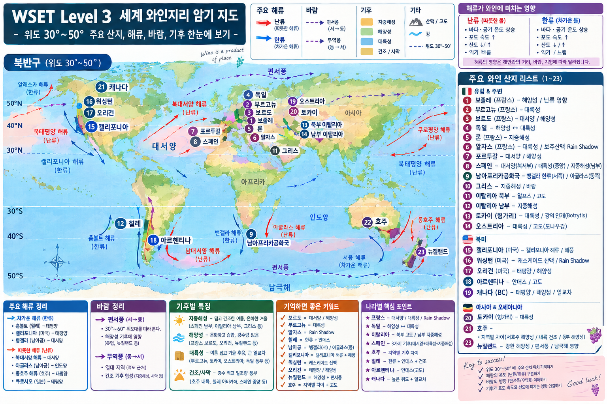

23개 핵심 와인 산지 · 지리 + 품종 + 법/라벨 + 스파클링 + 주정강화 + 라벨 Deep Dive
CORE = 핵심 학습 범위 DEEP DIVE = 라벨 이해용 추가 심화
V5 기준: 주요 와인 산지·품종·법적 용어·라벨 해석을 한 화면에서 연결할 수 있도록 학습용으로 재구성했습니다.
Champagne/Cava/Prosecco/Sekt/Cap Classique 및 Port/Sherry/Fortified Muscat도 해당 23개 포인트 안에 보충했습니다.
원본 지도의 23개 학습 포인트는 유지하고, 지도에 별도 점이 없는 South West France / Southern France / Champagne / Finger Lakes는 가장 관련 있는 기존 패널에 포함했습니다.
전체 학습 지명 인덱스카드를 클릭하면 해당 지도 패널로 이동
23 Wine Study Zones · Complete Syllabushover = 요약 · click/tap = 상세

배경은 처음 제공한 지도 그대로입니다. V5의 번호는 23개 학습구역 재정리 번호이며, 세부 공식 지명은 오른쪽 패널에서 모두 확인할 수 있습니다.